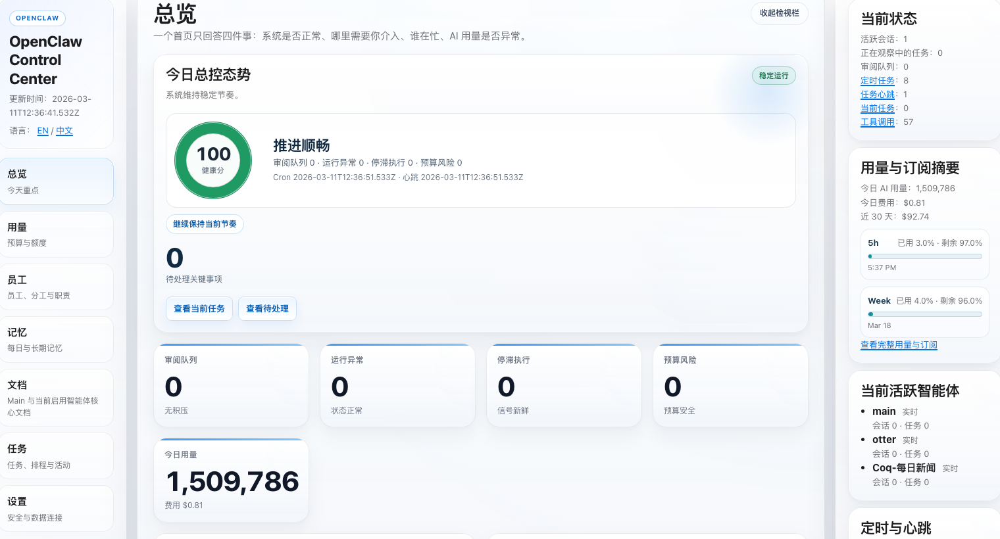
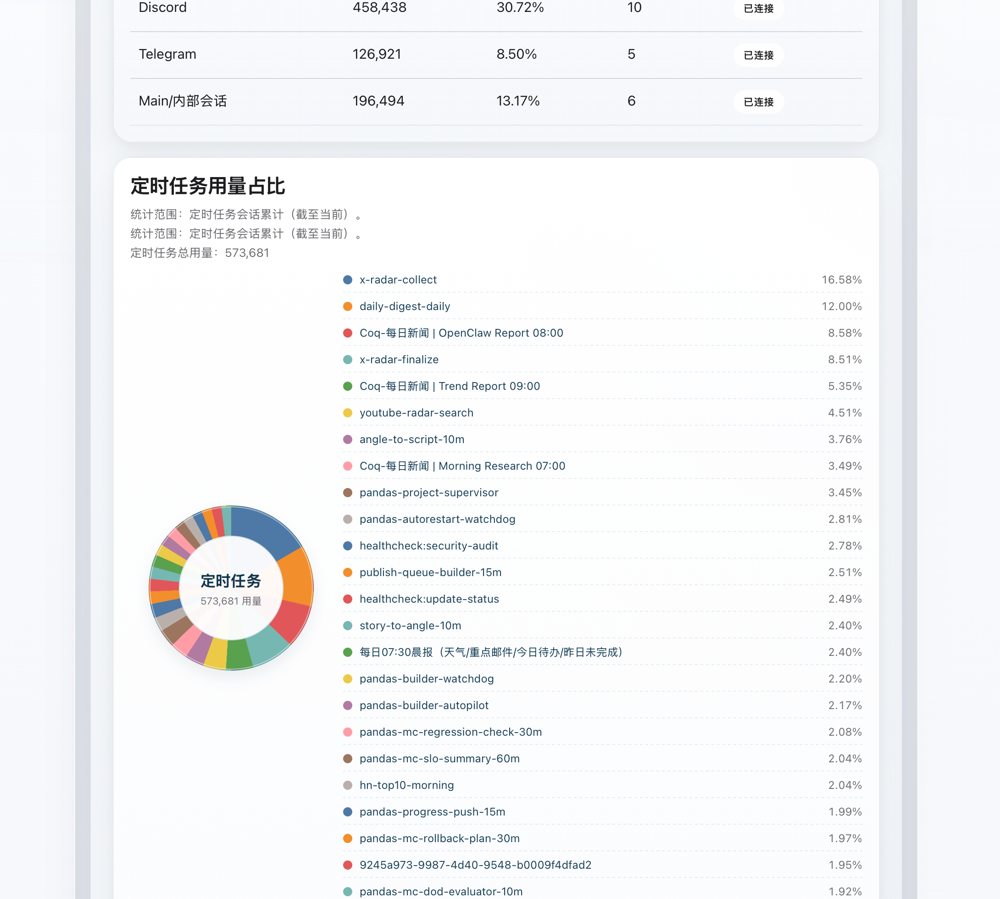
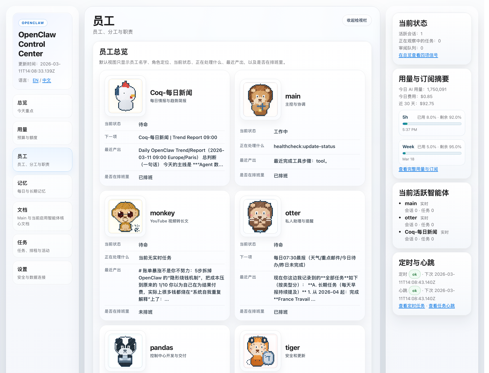

Current preview assets
Shipped overlay views



OpenClaw Control UI Overlay
This repository ships a UI overlay for an existing OpenClaw deployment. It wraps the native control UI, adds the Mission Control overview pages, and can optionally connect to a host-side helper for diagnostics.
/mission-control.html
Current preview assets



Integration notes